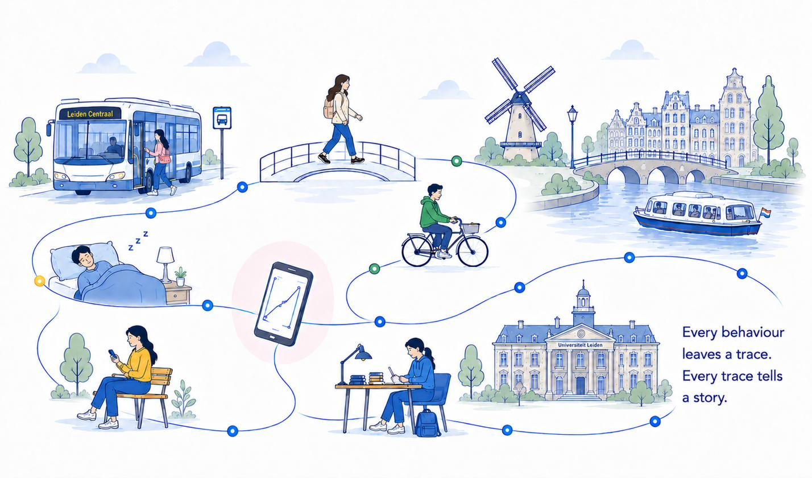

Understanding
Human Behaviour
in Everyday Life
We study the neural and behavioural signals behind everyday smartphone use — building a new generation of brain science focused on how people really think, feel and act, not just how they perform in a lab.
Scroll to explore